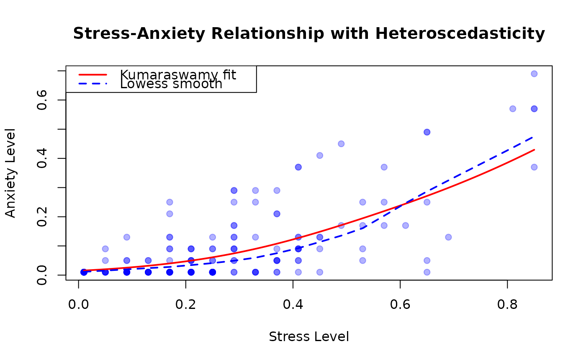

Data from a study examining the relationship between stress and anxiety levels among nonclinical women in Townsville, Queensland, Australia.
Format
A data frame with 166 observations on 2 variables:
- stress
numeric. Stress score transformed to the open unit interval (0, 1). Original scale ranged from 0 to 42 on the Depression Anxiety Stress Scales (DASS).
- anxiety
numeric. Anxiety score transformed to the open unit interval (0, 1). Original scale ranged from 0 to 42 on the DASS.
Details
Both stress and anxiety were assessed using the Depression Anxiety Stress Scales (DASS), ranging from 0 to 42. Smithson and Verkuilen (2006) transformed these scores to the open unit interval (without providing specific details about the transformation method).
The dataset is particularly interesting for demonstrating heteroscedastic relationships: not only does mean anxiety increase with stress, but the variability in anxiety also changes systematically with stress levels. This makes it an ideal case for beta regression with variable dispersion.
References
Smithson, M., and Verkuilen, J. (2006). A Better Lemon Squeezer? Maximum-Likelihood Regression with Beta-Distributed Dependent Variables. Psychological Methods, 11(1), 54–71.
Examples
# \donttest{
require(gkwreg)
require(gkwdist)
data(StressAnxiety)
# Example 1: Basic heteroscedastic relationship
# Mean anxiety increases with stress
# Variability in anxiety also changes with stress
fit_kw <- gkwreg(
anxiety ~ stress |
stress,
data = StressAnxiety,
family = "kw"
)
summary(fit_kw)
#>
#> Generalized Kumaraswamy Regression Model Summary
#>
#> Family: kw
#>
#> Call:
#> gkwreg(formula = anxiety ~ stress | stress, data = StressAnxiety,
#> family = "kw")
#>
#> Residuals:
#> Min Q1.25% Median Mean Q3.75% Max
#> -0.2943 -0.0394 -0.0152 0.0012 0.0231 0.2738
#>
#> Coefficients:
#> Estimate Std. Error z value Pr(>|z|)
#> alpha:(Intercept) -0.15576 0.09639 -1.616 0.106
#> alpha:stress 0.53167 0.33774 1.574 0.115
#> beta:(Intercept) 3.67043 0.30158 12.171 < 2e-16 ***
#> beta:stress -3.96207 0.81439 -4.865 1.14e-06 ***
#> ---
#> Signif. codes: 0 ‘***’ 0.001 ‘**’ 0.01 ‘*’ 0.05 ‘.’ 0.1 ‘ ’ 1
#>
#> Confidence intervals (95%):
#> 3% 98%
#> alpha:(Intercept) -0.3447 0.0332
#> alpha:stress -0.1303 1.1936
#> beta:(Intercept) 3.0793 4.2615
#> beta:stress -5.5582 -2.3659
#>
#> Link functions:
#> alpha: log
#> beta: log
#>
#> Fitted parameter means:
#> alpha: 0.9902
#> beta: 17.4
#> gamma: 1
#> delta: 0
#> lambda: 1
#>
#> Model fit statistics:
#> Number of observations: 166
#> Number of parameters: 4
#> Residual degrees of freedom: 162
#> Log-likelihood: 305.5
#> AIC: -602.9
#> BIC: -590.5
#> RMSE: 0.08686
#> Efron's R2: 0.5677
#> Mean Absolute Error: 0.05871
#>
#> Convergence status: Successful
#> Iterations: 16
#>
# Interpretation:
# - Alpha: Positive relationship between stress and mean anxiety
# - Beta: Precision changes with stress level
# (anxiety becomes more/less variable at different stress levels)
# Compare to homoscedastic model
fit_kw_homo <- gkwreg(anxiety ~ stress,
data = StressAnxiety, family = "kw"
)
anova(fit_kw_homo, fit_kw)
#> Analysis of Deviance Table
#>
#> Model 1: anxiety ~ stress
#> Model 2: anxiety ~ stress | stress
#>
#> Resid. Df Resid. Dev Df Deviance Pr(>Chi)
#> fit_kw_homo 163.00000 -588.89928
#> fit_kw 162.00000 -610.94842 1 22.04913 < 1e-04 ***
#> ---
#> Signif. codes: 0 '***' 0.001 '**' 0.01 '*' 0.05 '.' 0.1 ' ' 1
# Example 2: Nonlinear stress effects via polynomial
# Stress-anxiety relationship often shows threshold or saturation effects
fit_kw_poly <- gkwreg(
anxiety ~ poly(stress, 2) | # quadratic mean
poly(stress, 2), # quadratic precision
data = StressAnxiety,
family = "kw"
)
summary(fit_kw_poly)
#>
#> Generalized Kumaraswamy Regression Model Summary
#>
#> Family: kw
#>
#> Call:
#> gkwreg(formula = anxiety ~ poly(stress, 2) | poly(stress, 2),
#> data = StressAnxiety, family = "kw")
#>
#> Residuals:
#> Min Q1.25% Median Mean Q3.75% Max
#> -0.3104 -0.0498 -0.0116 -0.0028 0.0228 0.2447
#>
#> Coefficients:
#> Estimate Std. Error z value Pr(>|z|)
#> alpha:(Intercept) 0.01689 0.06512 0.259 0.795292
#> alpha:poly(stress, 2)1 2.43589 1.01831 2.392 0.016752 *
#> alpha:poly(stress, 2)2 2.86240 1.04517 2.739 0.006168 **
#> beta:(Intercept) 2.72015 0.17477 15.565 < 2e-16 ***
#> beta:poly(stress, 2)1 -9.58460 2.55838 -3.746 0.000179 ***
#> beta:poly(stress, 2)2 7.09996 2.66543 2.664 0.007728 **
#> ---
#> Signif. codes: 0 ‘***’ 0.001 ‘**’ 0.01 ‘*’ 0.05 ‘.’ 0.1 ‘ ’ 1
#>
#> Confidence intervals (95%):
#> 3% 98%
#> alpha:(Intercept) -0.1107 0.1445
#> alpha:poly(stress, 2)1 0.4400 4.4317
#> alpha:poly(stress, 2)2 0.8139 4.9109
#> beta:(Intercept) 2.3776 3.0627
#> beta:poly(stress, 2)1 -14.5989 -4.5703
#> beta:poly(stress, 2)2 1.8758 12.3241
#>
#> Link functions:
#> alpha: log
#> beta: log
#>
#> Fitted parameter means:
#> alpha: 1.082
#> beta: 24.18
#> gamma: 1
#> delta: 0
#> lambda: 1
#>
#> Model fit statistics:
#> Number of observations: 166
#> Number of parameters: 6
#> Residual degrees of freedom: 160
#> Log-likelihood: 309.9
#> AIC: -607.9
#> BIC: -589.2
#> RMSE: 0.08802
#> Efron's R2: 0.5561
#> Mean Absolute Error: 0.06071
#>
#> Convergence status: Successful
#> Iterations: 20
#>
# Interpretation:
# - Quadratic terms allow for:
# * Threshold effects (anxiety accelerates at high stress)
# * Saturation effects (anxiety plateaus at extreme stress)
# Test nonlinearity
anova(fit_kw, fit_kw_poly)
#> Analysis of Deviance Table
#>
#> Model 1: anxiety ~ stress | stress
#> Model 2: anxiety ~ poly(stress, 2) | poly(stress, 2)
#>
#> Resid. Df Resid. Dev Df Deviance Pr(>Chi)
#> fit_kw 162.00000 -610.94842
#> fit_kw_poly 160.00000 -619.88378 2 8.93537 0.011474 *
#> ---
#> Signif. codes: 0 '***' 0.001 '**' 0.01 '*' 0.05 '.' 0.1 ' ' 1
# Example 3: Exponentiated Kumaraswamy for extreme anxiety patterns
# Some individuals may show very extreme anxiety responses to stress
fit_ekw <- gkwreg(
anxiety ~ poly(stress, 2) | # alpha: quadratic mean
poly(stress, 2) | # beta: quadratic precision
stress, # lambda: linear tail effect
data = StressAnxiety,
family = "ekw"
)
summary(fit_ekw)
#>
#> Generalized Kumaraswamy Regression Model Summary
#>
#> Family: ekw
#>
#> Call:
#> gkwreg(formula = anxiety ~ poly(stress, 2) | poly(stress, 2) |
#> stress, data = StressAnxiety, family = "ekw")
#>
#> Residuals:
#> Min Q1.25% Median Mean Q3.75% Max
#> -0.1974 -0.0324 -0.0052 0.0110 0.0310 0.2990
#>
#> Coefficients:
#> Estimate Std. Error z value Pr(>|z|)
#> alpha:(Intercept) -1.9135 0.5103 -3.750 0.000177 ***
#> alpha:poly(stress, 2)1 5.4724 1.7206 3.180 0.001470 **
#> alpha:poly(stress, 2)2 8.3272 1.2083 6.892 5.51e-12 ***
#> beta:(Intercept) 1.6775 0.1531 10.954 < 2e-16 ***
#> beta:poly(stress, 2)1 -5.0750 0.9539 -5.320 1.04e-07 ***
#> beta:poly(stress, 2)2 5.2634 1.5502 3.395 0.000685 ***
#> lambda:(Intercept) 7.7664 2.1310 3.644 0.000268 ***
#> lambda:stress -10.2013 2.7870 -3.660 0.000252 ***
#> ---
#> Signif. codes: 0 ‘***’ 0.001 ‘**’ 0.01 ‘*’ 0.05 ‘.’ 0.1 ‘ ’ 1
#>
#> Confidence intervals (95%):
#> 3% 98%
#> alpha:(Intercept) -2.9136 -0.9133
#> alpha:poly(stress, 2)1 2.1000 8.8448
#> alpha:poly(stress, 2)2 5.9591 10.6954
#> beta:(Intercept) 1.3774 1.9777
#> beta:poly(stress, 2)1 -6.9447 -3.2053
#> beta:poly(stress, 2)2 2.2251 8.3016
#> lambda:(Intercept) 3.5897 11.9430
#> lambda:stress -15.6637 -4.7389
#>
#> Link functions:
#> alpha: log
#> beta: log
#> lambda: log
#>
#> Fitted parameter means:
#> alpha: 0.3187
#> beta: 6.38
#> gamma: 1
#> delta: 0
#> lambda: 510.3
#>
#> Model fit statistics:
#> Number of observations: 166
#> Number of parameters: 8
#> Residual degrees of freedom: 158
#> Log-likelihood: 337.9
#> AIC: -659.9
#> BIC: -635
#> RMSE: 0.08709
#> Efron's R2: 0.5654
#> Mean Absolute Error: 0.05688
#>
#> Convergence status: Successful
#> Iterations: 37
#>
# Interpretation:
# - Lambda: Linear component captures asymmetry at extreme stress levels
# (very high stress may produce different tail behavior)
# Example 4: McDonald distribution for highly skewed anxiety
# Anxiety distributions are often right-skewed (ceiling effects)
fit_mc <- gkwreg(
anxiety ~ poly(stress, 2) | # gamma
poly(stress, 2) | # delta
stress, # lambda: extremity
data = StressAnxiety,
family = "mc",
control = gkw_control(method = "BFGS", maxit = 1500)
)
#> Warning: NaNs produced
summary(fit_mc)
#>
#> Generalized Kumaraswamy Regression Model Summary
#>
#> Family: mc
#>
#> Call:
#> gkwreg(formula = anxiety ~ poly(stress, 2) | poly(stress, 2) |
#> stress, data = StressAnxiety, family = "mc", control = gkw_control(method = "BFGS",
#> maxit = 1500))
#>
#> Residuals:
#> Min Q1.25% Median Mean Q3.75% Max
#> -0.0499 -0.0499 -0.0297 0.0315 0.0701 0.6311
#>
#> Coefficients:
#> Estimate Std. Error z value Pr(>|z|)
#> gamma:(Intercept) -0.2351921 0.2665143 -0.882 0.378
#> gamma:poly(stress, 2)1 0.0190891 NaN NaN NaN
#> gamma:poly(stress, 2)2 -0.0009618 0.7054250 -0.001 0.999
#> delta:(Intercept) 0.0375628 0.1891093 0.199 0.843
#> delta:poly(stress, 2)1 -0.0066401 1.6486664 -0.004 0.997
#> delta:poly(stress, 2)2 -0.0032370 NaN NaN NaN
#> lambda:(Intercept) -0.3680521 0.0287293 -12.811 <2e-16 ***
#> lambda:stress -0.0152252 NaN NaN NaN
#> ---
#> Signif. codes: 0 ‘***’ 0.001 ‘**’ 0.01 ‘*’ 0.05 ‘.’ 0.1 ‘ ’ 1
#>
#> Confidence intervals (95%):
#> 3% 98%
#> gamma:(Intercept) -0.7576 0.2872
#> gamma:poly(stress, 2)1 NaN NaN
#> gamma:poly(stress, 2)2 -1.3836 1.3816
#> delta:(Intercept) -0.3331 0.4082
#> delta:poly(stress, 2)1 -3.2380 3.2247
#> delta:poly(stress, 2)2 NaN NaN
#> lambda:(Intercept) -0.4244 -0.3117
#> lambda:stress NaN NaN
#>
#> Link functions:
#> gamma: log
#> delta: logit
#> lambda: log
#>
#> Fitted parameter means:
#> alpha: 1
#> beta: 1
#> gamma: 0.7904
#> delta: 5.094
#> lambda: 0.6891
#>
#> Model fit statistics:
#> Number of observations: 166
#> Number of parameters: 8
#> Residual degrees of freedom: 158
#> Log-likelihood: 227.8
#> AIC: -439.5
#> BIC: -414.6
#> RMSE: 0.136
#> Efron's R2: -0.05914
#> Mean Absolute Error: 0.08386
#>
#> Convergence status: Successful
#> Iterations: 6
#>
# Compare models
AIC(fit_kw, fit_kw_poly, fit_ekw, fit_mc)
#> df AIC
#> fit_kw 4 -602.9484
#> fit_kw_poly 6 -607.8838
#> fit_ekw 8 -659.8696
#> fit_mc 8 -439.5397
# Visualization: Stress-Anxiety relationship
plot(anxiety ~ stress,
data = StressAnxiety,
xlab = "Stress Level", ylab = "Anxiety Level",
main = "Stress-Anxiety Relationship with Heteroscedasticity",
pch = 19, col = rgb(0, 0, 1, 0.3)
)
# Add fitted curve
stress_seq <- seq(min(StressAnxiety$stress), max(StressAnxiety$stress),
length.out = 100
)
pred_mean <- predict(fit_kw, newdata = data.frame(stress = stress_seq))
lines(stress_seq, pred_mean, col = "red", lwd = 2)
# Add lowess smooth for comparison
lines(lowess(StressAnxiety$stress, StressAnxiety$anxiety),
col = "blue", lwd = 2, lty = 2
)
legend("topleft",
legend = c("Kumaraswamy fit", "Lowess smooth"),
col = c("red", "blue"), lwd = 2, lty = c(1, 2)
)

# }